Length Contraction, Simultaneity, and Relativistic Momentum
What is Length Contraction, Simultaneity, and Relativistic Momentum?
Callout
Length Contraction
Length contraction is the phenomenon that a moving object's length is measured to be shorter than its proper length, which is the length as measured in the object's own rest frame.

Observer 1 measures the distance between points A and B by using a clock to measure the time, Dts, it takes him to travel between the two points, together with his known speed.
Proper length (Ls) is the length of an object or distance between two points as measured by an observer who is stationary relative to the object or distance.
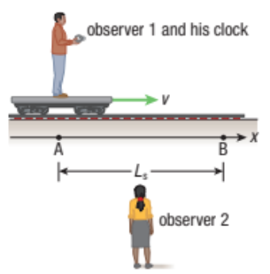
Recall from Section 11.2 that when observer 2 measures with her clock the time it takes for observer 1 to travel from A to B, the value she determines for 🔺t(m) is given by the time dilation equation:
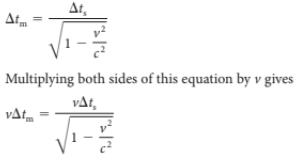
For observer 2, the time that observer 1 travels multiplied by v is simply the distance between A and B, or Ls:
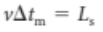
Similarly, the distance measured by observer 1 is the speed, v, times the proper time measured in his reference frame, so:
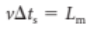
Substituting these last two equations into the time dilation equation gives the following result:
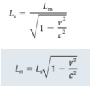
Observer 1 is at rest and observer 2, along with the meter stick, is in a reference frame moving with speed v relative to observer 1. Observer 1 observes that the moving meter stick is shorter than the length measured by Observer 2.
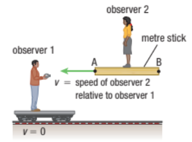
Relativistic length (Lm) is the length of an object or the distance between two points as measured by an observer moving with respect to the object or distance.
Length contraction is described by the following equation:
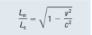
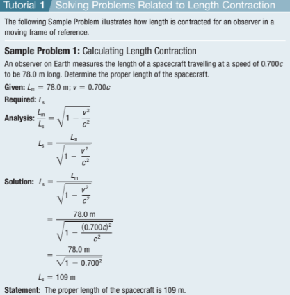
Practice
A spacecraft passes you at a speed of 0.80c. The proper length of the spacecraft is 120 m. Determine the length that you measure as it passes you.
Muons and Evidence for Length Contraction and Time Dilation
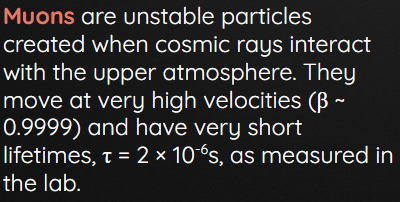
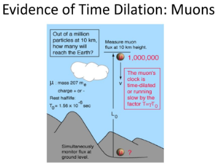
Relativity of Simultaneity
Simultaneity is the occurrence of two or more events at the same time.
Example: When you are driving down the street, and you see two different traffic lights change color at the same time.
The Twin Paradox
The twin paradox is a thought experiment in which a traveler in one frame of reference returns from a voyage to learn that time had passed more slowly in his spacecraft relative to the passage of time on Earth, despite the seemingly symmetric predictions of special relativity.

This result appears puzzling because each twin sees the other twin as moving, and so, as a consequence of an incorrect and naive application of time dilation and the principle of relativity, each should paradoxically find the other to have aged less.

However, this scenario can be resolved within the standard framework of special relativity: the traveling twin's trajectory involves two different inertial frames, one for the outbound journey and one for the inbound journey. Another way of looking at it is by realizing that the traveling twin is undergoing acceleration, which makes him a non-inertial observer.
In both views, there is no symmetry between the spacetime paths of the twins. Therefore, the twin paradox is not a paradox in the sense of a logical contradiction.
Relativistic Momentum
Newtonian momentum gives a linear relation between p and v. By contrast, in special relativity the relativistic momentum—the momentum of objects moving at speeds near the speed of light—becomes extremely large as the object’s speed approaches c. Figure 7 graphically compares the momentum in Newtonian physics and special relativity.
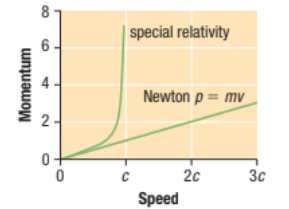
This is the equation for relativistic momentum, which is used to calculate the momentum of objects moving at close to the speed of light. The momentum of an object differs noticeably from the predictions of Newtonian mechanics for speeds greater than about 0.1.

An important feature of the equation for relativistic momentum is the rest mass, m. Rest mass is the mass of the object as measured at rest with respect to the observer.
Relativistic mass is the mass of an object measured by an observer moving with speed v with respect to the object.
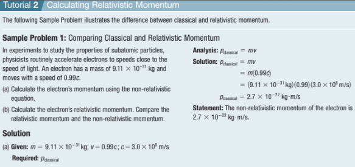
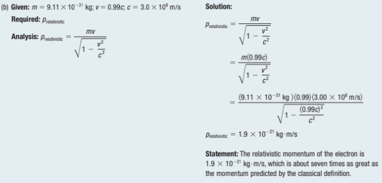
Practice
Suppose a 100.0 g projectile is launched with a speed of 0.30c relative to Earth. Determine its relativistic momentum with respect to Earth.
The Universal Speed Limit
Einstein showed that the universe does, in fact, have a speed limit: the speed of light in a vacuum (that is, empty space). Nothing can travel faster than 300,000 kilometers per second (186,000 miles per second).